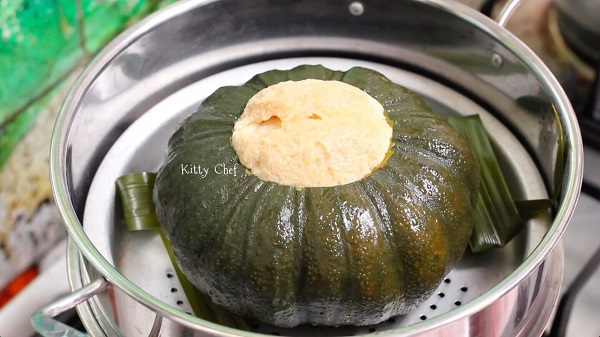

แจกฟรี ! สูตรสังขยาฟักทองขนมไทยโบราณ อร่อยนุ่มละมุนลิ้น ลูกเดียวอิ่มคุ้มทั้งครอบครัว
เมนูจากฟักทองเอามาทำอาหารคาวจนเบื่อเปลี่ยนแนวมาทำขนมหวานกินเพลิน ๆ ดีกว่า โดยเฉพาะเมนูสังขยาไข่ยอดนิยม กระปุกดอทคอมขอนำเสนอวิธีทำสังขยาฟักทอง หรือ ฟักทองสังขยา สูตรจาก คุณ Kitty Chef สมาชิกเว็บไซต์พันทิปดอทคอมเนื้อฟักทองนึ่งเข้ากันดีกับสังขยาหวานหอม ถ้ากินทั้งลูกดูลำบากไปลองดัดแปลงเป็นเมนูสังขยาฟักทองแบบถาดก็เข้าท่านะคะ
แจกสูตรความอร่อย สังขยาเนื้อเนียนนุ่มทำอย่างไรมาดูกันค่ะ โดย Chef สมาชิกเว็บไซต์พันทิปดอทคอม
สังขยาฟักทอง ขนมหวานไทยยอดนิยม แจกสูตรความอร่อย สังขยาเนื้อเนียนนุ่มทำอย่างไรมาดูกันค่ะ
ส่วนผสม สังขยาฟักทอง
• ฟักทอง (พันธุ์ศรีเมือง) ลูกเล็กไม่เกิน 1 กิโลกรัม จำนวน 2 ลูก
• หัวกะทิ 250 กรัม
• น้ำตาลปี๊บ (น้ำตาลโตนด) 500 กรัม
• ไข่ไก่ 3 ฟอง
• ไข่เป็ด 3 ฟอง
• ใบเตย 5 ใบ
• เกลือ (เล็กน้อย)
วิธีทำสังขยาฟักทอง
ใช้มีดเจาะไปที่ขั้วฟักทองเป็นวงกลมหรือสี่เหลี่ยมก็ได้ ใช้ช้อนขูดเอาเมล็ดและไส้ฟักทองออก แล้วนำไปล้างให้สะอาดผึ่งให้แห้ง
เทหัวกะทิ น้ำตาลปี๊บ ตอกไข่ และใส่เกลือลงไป
ใช้ใบเตยขยำให้ส่วนผสมทุกอย่างเข้ากัน
กรองด้วยกระชอนแล้วเทใส่ในลูกฟักทอง (ส่วนผสมสังขยาสูตรนี้จะทำได้กับฟักทอง 2 ลูกนะคะ)
นำไปนึ่งในน้ำเดือด จากนั้นก็ลดเป็นไฟอ่อน ใช้เวลานึ่งประมาณ 1 ชั่วโมง (หมั่นเปิดฝาดูทุก ๆ 20 นาทีนะคะ)

ครบเวลาแล้ว สังขยาฟักทองสุกน่ากิน
พักสังขยาฟักทองให้เย็น แล้วจึงนำมาผ่าครึ่ง แบ่งเป็นชิ้นเล็ก ๆ
ฟักทอง ลูกโตเอามาทำแกงกะทิก็เบื่อ เอามาผัดกับไข่ก็เอียน แต่ถ้าเอามาทำขนมไทยอย่างเมนูสังขยาฟักทองก็น่าสนใจนะคะ เนื้อสังขยาเนียนกริ๊บมากเลยค่ะ ลองทำดูแล้วจะติดใจค่ะ
ขอขอบคุณข้อมูลและภาพประกอบจาก
คุณ Kitty Chef สมาชิกเว็บไซต์พันทิปดอทคอม< KittyChef>
Copyright © EAT&EAT nc. สงวนลิขสิทธิ์